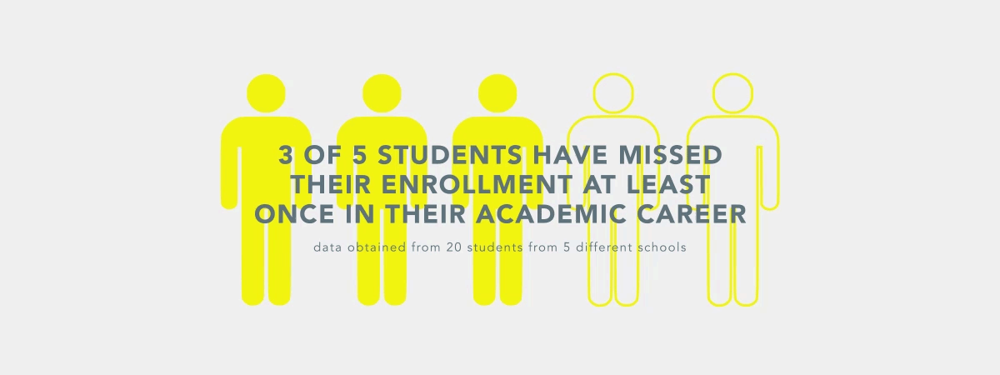
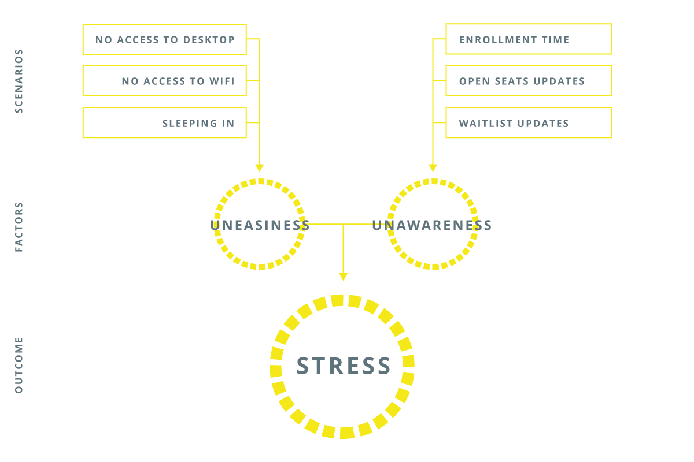
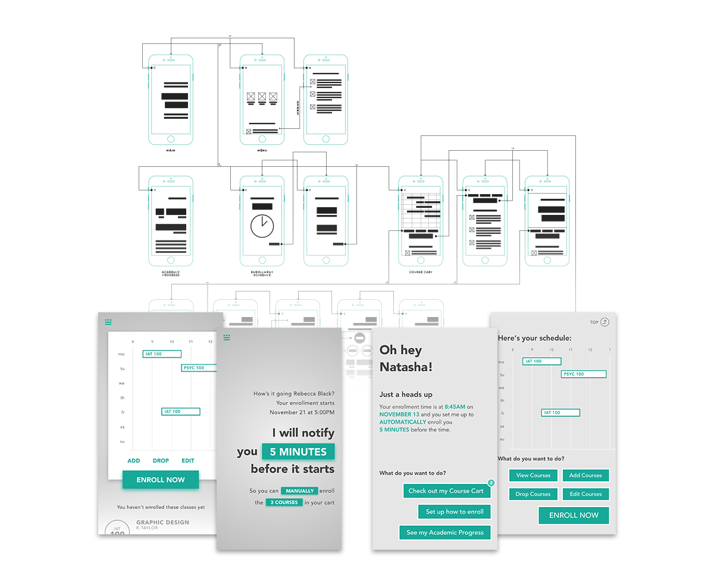
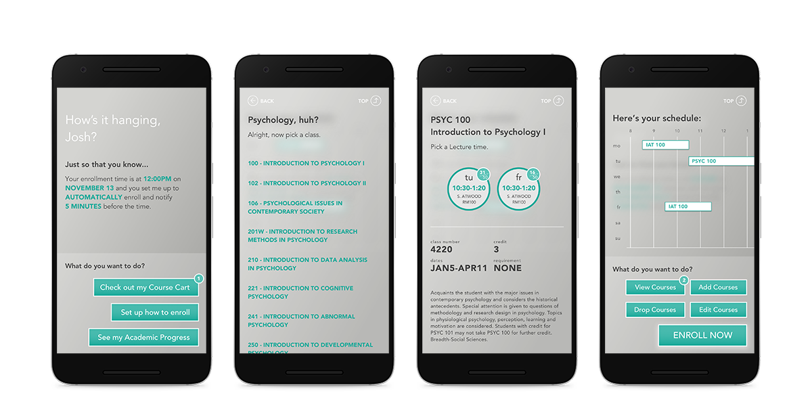
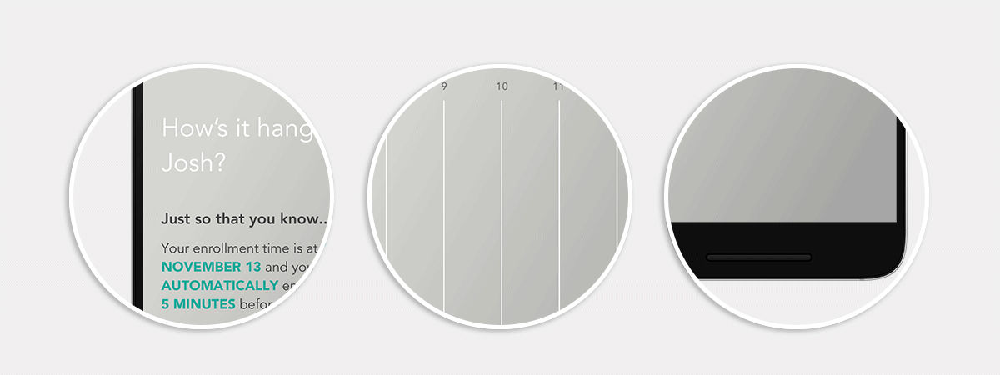
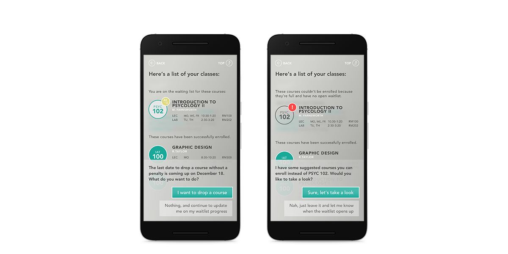
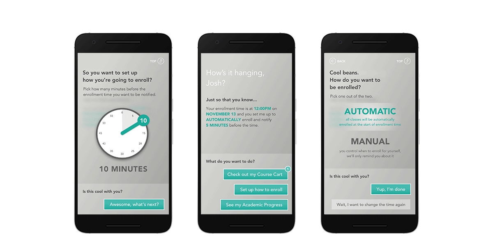
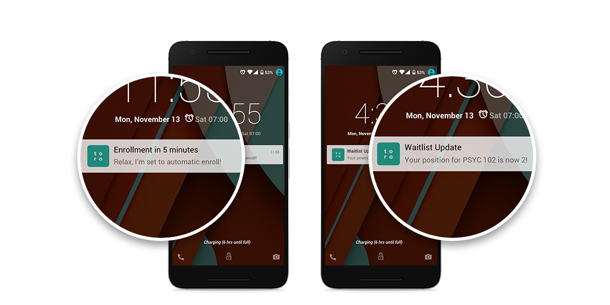

It reassures users by giving them control of automatically or manually enrolling their courses while keeping them updated on the status in a sophisticated and clean interface.
Other than the non-existance of a mobile-friendly solution in the market today, I conducted some research and found out that there is a problem that a large percentage of students have faced.
The reasons vary, but they all link to the lack of awareness or in a situation where they can’t use a computer. This creates an opportunity to design an intervention that can take advantage of a smartphone’s ability to notify students, keep a consistant update on an enrollment progress, and grant the ability to freely enroll whereever and whenever.
Afterall, whatever a student enrolls into is what they’re stuck with for the next 4 months and can heavily impact their grades and schedule. Such an important task can be very uneasy to go through, and being unaware of how the enrollment progress can generate stress.
This infographic shows how the stress is broken down to two main factors. Uneasiness from the inability to enroll at the time, and unawareness from the lack of updates on how the enrollment progress is going. These are the two main problems that toro aims to solve.
Through a Journey Map of the entire enrollment process, I decided to create a design intervention during the beginning and during of the enrollment process, to focus more on how to prevent missing out the time of enrollment and lower the anxiety and insecurity that students feel as enrollment time approaches.
Prior to the final designs of toro, I conducted an A/B testing of two different iterations for students to see which direction meet their needs, and observe how they interact differently in each iteration. The prototypes were made with Sketch and Invision.
Demonstrated in the above video, Toro is intended to make full uses of the capabilities of a smartphone to lessen the burden on students during their enrollment time with the following methods.
The entire look and feel of the experience was designed to give off a less traditional feel of a complex, utility system and more of a minimal and straightforward approach. Not only will it simplify navigating throughout a complex enrollment process, but will also let users see the desired information that meet their needs without overloading them with many options.
Different kinds of animations were explored and implemented to help provide a more inuitive experience.
To ensure students understand what to do in each step of the process, a dialogue system is used to instruct the user their options and walk them through each step of the way. Through some usability testing, I found having short concise instructions was much preferred over using ambiguous icons and short label buttons as test participants understood the instructions right away and took less time to think and accurately carry out actions.
A casual language creates familiarity in the experience, similar to how Tumblr works, and aims to lessen the burden of understanding a complicating process. Over time, this builds up the trust the user has in the experience which will then increase the value to the product.
Toro presents two methods for how students want to enroll their courses. They can choose to let the system automatically enroll and update the outcome to the student, which sets up a safety net to get the task done without them worrying they may miss the enrollment time. The other options is for students to manually enroll themselves for more of an in-control approach.
It was well noted that many students hassles back and forth their enrollment systems to constantly check whether the class they desired is full or not prior to enrollment. The notifications not only reminds them when is their enrollment time but also alerts and assures students whenever there is an update to the classes they want to enroll in or how they are doing in the waitlist.